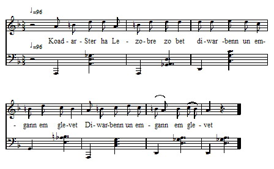

Lezobre - Version 4 - Mélodie 2
Le Géant Lizandré
Seigneur de la Noëverte, en la paroisse de Lanloup
Publié par François-Marie Luzel dans "Gwerzioù Breizh-Izel", tome II, page 563, en 1874

Mélodie 2
Air publié dans "Musiques bretonnes" par Maurice Duhamel
Recueilli auprès de Maryvonne Bouillonnec, de Tréguier
Enregistrée par François Vallée.
Arrangement Christian Souchon (c) 2008
Source: le site de M.Quentel, "Son ha ton" (voir "Liens")
Ar "Géant" Lizandré Aotrou ar Voas-C'hlaz, en parous Sant Loup Tre Coat-ar-Sant ha Lizandre 'Zo asinet un asamble. Doue da rey dezhe beaj vad, Ha d'ar re 'zo er gèr, keloù mad! An aotroù Coat-ar-Sant a lare D'an aotroù Lizandre, p'hen salude: - Bet 'm-eus ul lizer digant ar roue Da gaout brezel ouzit, Lizandre. - Mar t-eus lizer da gaout brezel ouzin, Diskouez da lizer m'hen lennin. - Disterrañ soudard 'zo em bandenn N'astenfe ket e zorn dit, azenn! - Mar d'on-me azenn, a-dra-sur, Me n'on ket azenn dre natur. Me n'on ket azenn dre natur, Ma zad oa brudet un den fur. Mar n'hoc'h-eus ma zad anveet, Bremañ-soudenn e vab anvefet. Dibrit, floc'hig, ma inkane gwenn, Lakit 'r brid arc'hant en e benn. Ha dibr alaouret war e geign Ma vo brao da dougenn un azenn. Pa gouefe ma marc'h bep kammed, Me renk mont fenoz da Wened.- An aotrou Lizandre a lare Da Zantez Ana pa zigoueze: - Demad d'eoc'h, Santez Ana Wened, Deut on c'hoazh ur wech d'ho kweled. En triwec'h emgann ez on bet Bremañ ec'han d'an naontegvet. Graet c'hoazh ur burzud em andret Gant an aon na vefenn gloazet. Me rey d'eoch, O mamm Gwerc'hez kêr, Seizh gwiskad vit ho seizh aoter.- N'oa ket e c'hir peurlavaret, Santez Ana outañ d'eus komzet: - Oh! ya, te zo bepred ma mab-me! , Kerzh buhan d'ar ger, Lizandre! Na gas den ganit d'an emgann-se 'Med da floc'hig bihan a ve.- An aotrou Lizandre lare D'e flohig bihan an deiz-se: - Lemm da gleve ouzh ma hini, Ha deus-te d'an emgann ganin! Em dalc'homp hon-daou en ur c'hever, Ha ni droc'ho dir 'vel an avel. An aotrou Coat-ar-Sant a laras Da Lizandre, 'vel m'hen gwelas: - N'eoc'h ket en ho pro un den karet Pa n'ez eoc'h deut gant soudarded?- A-boan a oa e c'hir laret, M'oa Coat-ar-Sant eno koueet, Gant hanter-kant e soudarded Hanter-kant all a oa tec'het: Hag ar floc'hig bihan en-tu all En-deus lac'het ur c'hemend-all. Ar roue, pa en-deus klevet, D'e baj bihan en-deus laret: - Paj, ma fajig bihan, hastit Da vont fete da Sant Briek, -Da gomz ouzh 'n aotroù Lizandre 'Vit lared d'e'an dont ma beteg.- Pajik ar roue a lare En Sant-Briek pa errue: - Demat ha joa d'ar gér-mañ, 'N aotrou Lizandre pelec'h 'ma? Ar marc'hek koz, p'en-eus klevet, E benn ar fenestr 'n-eus lakaet: - Mar d'eo Lizandre c'houlennet, Pajik bihan, outañ komzit. - Dalc'h aze lizer, Lizandre, Digaset dit 'beurzh ar roue. - Mar d'eo gant ar roue skrivet din Dama'nezhan 'vit m'her lennin. - Her lar d'eoc'h, eme'r paj bihan, Mont d'c'hoari gant e vorian. - Disk din eta, pajik bihan, Stumm hag ardo brezel e vorian? - Kement-se d'eoc'h na larin ket, Gant aon a vefen diskuliet. - Ken gwir ha m'eus 'r maro da dremen, Pajik, n'en lavarin biken. - Ar morian gouez pa vo deut er sal, Daolo e dilhad traoñ raktal: Grit veltañ! Ha pa rey sailh en aer, Lakit ho kleve d'en degemer. Kerkent m'en gwelfet tic'houina; Taolit dour benniget gantañ! Pa c'houlenno ouzoc'h diskuiza, N' roit ket a ziskuiz dezhañ, Rag hennezh n'eus gantañ louzou Vent ket pell wellaad goulioù - Dalc'hit, pajik setu kant skoed, P' hoc'h eus gant gwirionez ma aliet. Panevet hoc'h vijen bet lac'het, Ha ma mamm gêz vije glac'haret. An aotroù Lizandre a lare Er gêr a Bariz p'errue: - Demad d'heoc'h, aotroù ar roue, Da betra c'h eus ezomm Lizandre? - Laret am eus dit dond am bete, Vit c'hoari ouzh ma morian gouez. P'erru 'r morian 'n penn al lis, O soñjal er-vat gounid ar priz, E taol e zilhat d'ann douar, Lizandre 'daol he re war-var; Neuze pa deu da dic'houina, 'Taole dour benniget gantañ. Pa neue 'r morian barzh an aer, Lake he gleve d'hen difgemer. Morian ar roue 'zo lac'het, An tu Lizandre zo kiriek. Ar roue pa en-d'eus gwelet, D'an trec'her en-deus lavaret: - Hast kaer, emezhan, Lizandre, Tenn da gleve eus ma morian gouez - Me n' brisfen dougen ur c'hleve, Zo bet en morian ar roue... En meur a stourm edon-me bet, Ouzhpenn dek mil am-eus trec'het, Biskoazh n'am-boe kement a boan Vel o c'hoari eus a morian. Itron Santez Ana, ma mamm ger, C'hwi ra burzudoù em c'heve; Me savo d'eoc'h un tibedi War grec'h, 'tre Leger ha Gindi... (1) (1) Le Guindi est une petite rivière qui se jette dans le Jaudy à Tréguier. C'est à tort que M. de La Villemarqué a dit "Etre beg Leger had Indi". Je ne connais en Bretagne aucun cours d'eau du nom d'Indy". [Cette erreur est corrigée dans l'édition de 1867, page 98 dernière ligne de "Le More du roi", et dans la citation en note de Guiclan "Eüruz, eüruz an ti Etre beg Leger ha Gindi" qui annonce la construction en cet endroit d'un sanctuaire placé sous l'invocation de Sainte Anne] |
RAPPROCHEMENT AVEC BARZHAZ III MARC'HEK AR ROUE 72. Etre Lorgnez ha marc'heg Lez-Breizh A zo bet tonket un emgann reizh 73. Doue da rey gounid d'ar Breizhad Ha d'ar re zo er gêr keloù mat ! 114. Disterañ mevel zo em bandenn A lemfe ho tok diwar ho penn" 117."Ma ne t'eus ket anave'et an tad Me ray dit anaout ar mab anat ! - 75. "Dihun, va floc'h, ha sav alese Ha kae da spuran din va c'hleze 76. Va zok-houarn, va goaf ha va skoed D'o ruziañ e gwad ar C'hallaoued 86. Santez Anna 'r vor pa erruas Tre 'barzh he iliz eñ a yeas 87. - Itron Santez Anna benniget Yaouankik e teuis d'ho kwelet 88. Ne oan ket ugent vloaz achuet Hag e ugent stourmad e oan bet 89. Hag o holl hon eus o gounezet Dre ho kennerzh, itron benniget 90. Mard an me c'hoazh war va c'hiz d'ar vro Mamm Santez Anna, me ho kopro... 95. - Kae d'an emgann, kae, marc'heg Lez-Breizh Mont a ran-me ganeout-te ivez" 107.- Ha deut out da-unan d'an emgann ? - N'on ket deut d'an emgann ma-unan 105. - Stok da gleze, floc'h, ouz va c'hleze Ha deomp-ni araog en o beteg. - 104. Gweled pet zo anezhe rit-te Pa o-devo tañvet va dir-me. 101. - Sellit-hu! Lorgnez o tont en hent! Ur stroll marc'heien e ziagent. 102. Ur stroll marc'heien a-dren~v e gein: Dek zo ha dek all ha dek ouzhpenn 98. Hag ur floc'h bihan en e gichen Hag eñ, hervez e vrud, ur gwall zen" IV MORIAN AR ROUE 135. Roue ar C'hallaoued lavare D'an aotrounez he lez, ur mare 136. - Hennezh a aotreo din gwir feiz A zeuio a-benn e-veuz Lez-Breizh. 143. - Morian ar roue a zo deuet Hag ho tichekañ en deveus graet. 144. - Mar ma dichekañ en-deus graet Monet war e zichek a vo red. 145. - Aotroù kêz, na ouzoc'h ket eta? Dre arzoù an diaoul c'hoari a ra 146. - Mar dre arzoù an diaoul e c'hoari Dre gennerzDoue c'hoariomp-ni 156. Pa zeuio ar Morian dre ar zall E taolo d'an douar e vantal. 159. Pa zeuio warnoc'h ar ronf du Gant prenn ho koaf he kroaza én reot-hu. 137. C'hoari eneb din-me, na ra ken, Kerkouz, ha lazañ va marc'heien. 156. Pa zeuio ar Morian tre er zal E taolo d'ann douar e vantal 157. Tollit ket ho mantal d'an douar! Hogen lakit anezhi war varr! 159. Ha pa zeuio warnoc'h ar ronf du, Gant prenn ho koaf ho kroazha reot-hu! 160. Ha neuze pa lammo foll ha têr, C'hwi lakai ho koaf d'hen digemer. 175. Ken a gouezas Morian ar roue Hag e benn gant al leur a stoke. 177. Hag e goaf digantan a dennas; Penn ar Morian braz a drochas. 188. Hag an aotroù Lez-Breieh, neuze Lavare ivez evel-se: 189. - E ugent stourmad emaon-me bet Ouzhpenn mil den am-eus trec'het. 190. Biskoazh n'am-boe kement a boan Vel o c'hoari deus ar Morian. 191. Itron Santez Ana, va mamm ger, C'hwi a ra burzudoù em c'henver! 192. Me zavo d'eoc'h un ti-bedi War greac'h etre Liger ha Gindi. - |
TRADUCTION LE GEANT LIZANDRE Seigneur de la Noëverte, en la paroisse de Lanloup (1) Entre Koat-ar-Sant et Lizandré A été arrêtée une rencontre; Que Dieu leur donne bon voyage, Et à ceux qui sont à la maison, bonne nouvelle! Le seigneur de Koat-ar-Sant disait, Au seigneur de Lizandré en le saluant: - J'ai une lettre du roi Pour avoir guerre avec toi, Lizandré. - Si tu as lettre pour avoir guerre avec moi, Montre-moi ta lettre que je la lise. - Le dernier soldat de ma bande N'allongerait pas la main vers toi, âne. - Si je suis un âne, bien certainement, Je ne suis pas âne de nature; Je ne suis pas âne de nature, Mon père était, dit-on, un homme sage; Si tu n'as pas connu mon père, Moi, je te ferai connaître son fils ! - - Selle-moi, vite, ma haquenée blanche, Et mets-lui sa bride d'argent en tête; Et une selle dorée sur le dos, Qu'elle soit belle pour porter un âne. Et quand mon cheval tomberzit à chaque pas, Il me faut cette nuit aller à Vannes. Le seigneur Lizandré disait, En arrivant à Sainte-Anne : - Bonjour à vous, Sainte Anne de Vannes, Je suis venu encore une fois vous voir. - J'ai assisté à dix-huit combats, Et maintenant je vais au dix-neuvième; Faites encore un miracle en ma faveur, De crainte que je ne sois blessé. Et je vous donnerai, mère de la Vierge chérie, Sept parements pour vos sept autels. Il n'avait pas achevé ces mots, Que Sainte Anne lui dit: - Oh oui, tu es toujours mon fils à moi, Retourne vite chez toi, Lizandré. N'emmène personne avec toi à ce combat, A l'exception de ton jeune écuyer. Le seigneur Lizandré disait A son jeune écuyer, ce jour-là. - Aiguise ton épée contre la mienne, Et viens au combat avec moi. Tenons-nous tous les deux côte-à-côte Et nous couperons l'acier comme le vent. Le seigneur Koat-ar-Sant dit A Lizandré, quand il l'entendit : - Vous n'êtes pas aimé dans votre pays, Puisque vous êtes venu sans soldats? A peine avait-il dit ces mots, Que Koat-ar-Sant était couché à terre, Avec cinquante de ses soldats, Et cinquante autres avaient pris la fuite! Et le jeune écuyer de son côté, En avait tué tout autant. Le roi quand il l'a appris Dit à son jeune page: - Page, petit page, hâtez-vous D'aller aujourd'hui à Saint-Brieuc, Pour parler au seigneur Lizandré Et lui dire de venir jusqu'à moi. Le petit page du roi disait, En arrivant à aint-Brieuc: - Bonjour et joie aux habitants de cette ville, Le seigneur Lizandré où est-il? Le vieux chevalier l'entendant A mis la tête à la croisée. - Si l'on demande Lizandré, Page, c'est à lui que vous parlez. - Prenez cette lettre, Lizandré Envoyée de la part du roi. - Si c'est le roi qui l'a écrite, Donne-la moi que je la lise. - Il vous demande, dit le page, Contre son maure d'aller jouter. - Page il te faudra m'enseigner Les ruses et les tours de son maure. - Cela je ne le dirai pas. J'ai bien trop peur qu'on me dénonce. - Aussi vrai qu'un jour je mourrai, Je serai muet comme une tombe! - Le sauvage maure en entrant Jettera son manteau à terre. Vous aussi, puis, quan d il saute en l'air Tendez pour le recevoir l'épée. Quand vous le verrez dégainer Vous lui jetez de l'eau bénite. S'il vous prie de se reposer, Ne lui donnez point de relâche. Car celui-là avec ses herbes Sitôt guérirait ses blessures. - Tenez, page, ces cent écus Pour tous vos conseils véridiques. Sans lesquels j'eusse été tué Et ma pauvre mère désolée. - Le seigneur Lizandré disait En arrivant à Paris, sa ville. - Seigneur roi, bonjour à vous Vous avez besoin de Lizandré? - Je t'ai fait venir jusqu'à moi Pour jouter contre mon maure sauvage. Quand vient le maure sur la lice Comptant bien obtenir le prix, Il jette ses vêtements à terre, Et Lizandré jette les siens par desssus; Puis quand il vient à dégainer, Il lui jette de l'eau bénite. Quand le maure bondit en l'air Il mit son épée pour le recevoir. Le maure du roi est tué Et Lizandré en est la cause. Lorsque le roi s'en rendit compte A son vainqueur il s'adressa: - Hâte-toi, dit-il, Lizandré, De mon maure d'ôter ton glaive. - Je ne dédaignerais pas de porter Ce fer qui a occis le maure du roi... Je me suis trouvé en bien des batailles, J'ai vaincu plus de dix mille hommes, Mais jamais je n'eu tant de mal Qu'à ce combat contre le maure. Pour vous, Sainte Anne, mère chérie, Qui pour moi faites des miracles, J'élèverai un tabernacle Entre le Léguer et Guindi. Communiqué par M. Anatole de Barthélémy. (1) Le héros de cette ballade ne peut-être que Jean de Lannion, châtelain des Aubrays en Machecoul, seigneur de Lisandré en Plouha et de la Noë-Verte (en breton Gwaz-Glas) en Lanloup, arrondissement de Saint-Brieuc, du chef de sa mère, Julienne Pinart, dame de Lizandré et de la Noë-Verte. Coatarsant (que les chanteurs ont altéré en Coat-ar-Skinn), nom de son premier adversaire, est aussi celui d'un manoir en Lanmodez, paroisse de Plouha et de Lanloup. Ce manoir appartenait alors à Claude Le Saint, sieur de Coatarsant et petit-fils de Catherine Pinart. (Note extraite d'une lettre du 10février 1866, de M. Pol de Courcy à M. Anathole de Barthélémy. Notes de Luzel |

Les Aubrays -Version 1 - Mélodie 1
Les Aubrays -Version 2 - Mélodie 2
Les Aubrays -Version 3 - Mélodie 3
Les Aubrays -Version 3 - Mélodie 4
Les Aubrays -Version 5 - Mélodie 4
Les Aubrays -Versions Penguern
Retour à "Lez-Breizh" du Bazhaz Breizh